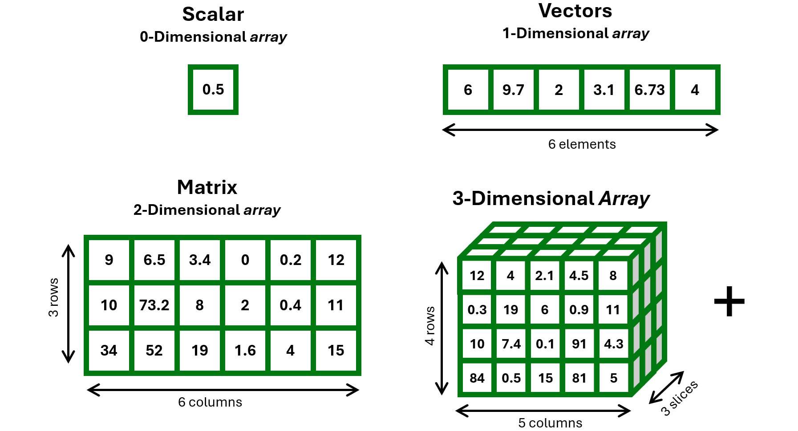

import numpy as npnumpy: efficient numerical computing (homogeneous 1-D to n-D arrays, vectorized operations) and some basic math, algebraic, and statistical functions;pandas: fundamental data structures for tabular data (DataFrames), with convenient indexing, reshaping, and manipulation tools;Most data science pipelines in Python rely on these two packages, as base Python lacks built-in data structures like vectors with vectorized operations, matrices / arrays, and data frames
Remember the concept of “array” from Basics of R for Data Science?

Example of 1-D array
Example of 2-D array (aka matrix, structured as a list of equally-long lists)
Unlike basic lists, arrays are homogenous and support fast vectorized operations, e.g., x*10, x**2, np.sqrt(x), etc.
array([[ 90., 65., 34., 0., 2., 120.],
[100., 732., 80., 20., 4., 110.],
[340., 520., 190., 16., 40., 150.]])Different ways of doing the same thing (comments?):
array([[3. , 2.5495, 1.8439, 0. , 0.4472, 3.4641],
[3.1623, 8.5557, 2.8284, 1.4142, 0.6325, 3.3166],
[5.831 , 7.2111, 4.3589, 1.2649, 2. , 3.873 ]])[ 6 8 10 12][ 5 12 21 32]70These features make np.array() conceptually very similar to the c() and array() objects of R. However, as we will see, np.array() is stricter in enforcing data types
What you can inspect for an array:
(3, 6)2188144dtype('float64')numpy arraysdtype('float64')dtype('int64')dtype('<U2')dtype('<U12')dtype('<U21')numpyEven with characters!
numpyActually, this “problem” is part of the secret of what makes Python numpy so efficient… but be careful!
How do you avoid this silent coercion? Explicitly state the data type from the beginning!
array([ 0.9456, 11. , 12. , 13. , 14. ])numpy1050[20 30 40]Pandas Seriesimport pandas as pd
grades = pd.Series([28, 15, 30, 23], index=["Jane", "Jim", "John", "Jack"])
print( grades["Jack"] )23Jane 28
John 30
Jack 23
dtype: int64Jack 23
Jane 28
dtype: int64Series are essentially like 1D numpy arrays, but labelled with keys (numerical indexing is deprecated for Series)
Pandas DataFrame ❤️myDF = {
"id": [1, 2, 3, 4],
"name": ["Pastore", "Granziol", "Feraco","Altoe"],
"course": ["CurrentIssues", "BasicsInference", "SEM","Outliers"],
"hours": [10, 20, 20, 5],
"mandatory": [True, True, False, False]
}
type(myDF)<class 'dict'> id name course hours mandatory
0 1 Pastore CurrentIssues 10 True
1 2 Granziol BasicsInference 20 True
2 3 Feraco SEM 20 False
3 4 Altoe Outliers 5 Falsepandas DataFrame is the classical tabular object we are familiar with; can be seen as a special type of Python dict (dictionary), composed of internally-homogeneous, equally-long, labelled lists
(4, 5)Index(['id', 'name', 'course', 'hours', 'mandatory'], dtype='object')<class 'pandas.core.frame.DataFrame'>
RangeIndex: 4 entries, 0 to 3
Data columns (total 5 columns):
# Column Non-Null Count Dtype
--- ------ -------------- -----
0 id 4 non-null int64
1 name 4 non-null object
2 course 4 non-null object
3 hours 4 non-null int64
4 mandatory 4 non-null bool
dtypes: bool(1), int64(2), object(2)
memory usage: 264.0+ bytesid int64
name object
course object
hours int64
mandatory bool
dtype: object id hours
count 4.000000 4.00
mean 2.500000 13.75
std 1.290994 7.50
min 1.000000 5.00
25% 1.750000 8.75
50% 2.500000 15.00
75% 3.250000 20.00
max 4.000000 20.00about equivalent to str() and summary() in R
id name course hours mandatory
0 1 Pastore CurrentIssues 10 True
1 2 Granziol BasicsInference 20 True
2 3 Feraco SEM 20 False
3 4 Altoe Outliers 5 False.iloc[] = integer-position based; .loc[] = label-based
id name course hours mandatory
0 1 Pastore CurrentIssues 10 True
1 2 Granziol BasicsInference 20 True
2 3 Feraco SEM 20 False
3 4 Altoe Outliers 5 False.iloc[] = integer-position based; .loc[] = label-based
id name course hours mandatory
0 1 Pastore CurrentIssues 10 True
1 2 Granziol BasicsInference 20 True
2 3 Feraco SEM 20 False
3 4 Altoe Outliers 5 False id name course hours mandatory
1 2 Granziol BasicsInference 20 True
2 3 Feraco SEM 20 False id name course hours mandatory
1 2 Granziol BasicsInference 20 True id name course hours mandatory
0 1 Pastore CurrentIssues 10 True id name course hours mandatory
0 1 Pastore CurrentIssues 10 True
1 2 Granziol BasicsInference 20 True
2 3 Feraco SEM 20 False
3 4 Altoe Outliers 5 False id name course hours mandatory wellBoh
0 1 Pastore CurrentIssues 10 True 0.750
1 2 Granziol BasicsInference 20 True -0.696
2 3 Feraco SEM 20 False -0.647
3 4 Altoe Outliers 5 False -0.495Python pandas) vs data.frame (R)| Task | Python (pandas) |
R |
|---|---|---|
| Select column | df["var"] |
df["var"] |
| Select column | df.var |
df$var |
| Multiple columns | df[["a", "b"]] |
df[, c("a", "b")] |
| Filter rows | df[df["var"] > 0] |
df[df$var > 0, ] |
| Add column | df["newVar"] = ... |
df$newVar = ... |
| Modify column | df["var"] = df["var"]+10 df["var"] += 10 |
df$var = df$var+10 |
| Summary | df.describe() |
summary(df) |
| Row access | df.loc[0] |
df[1, ] |
| Cell access | df.loc[0, "var"] |
df[1, "var"] |
| Cell access | df.iloc[0, 2] |
df[1, 3] |
pd.merge())pd.concat())dfDPG = pd.DataFrame({
"name": ["Jane", "Jim"],
"grade": [28, 15],
"department": ["dpg", "dpg"]
})
dfDPG name grade department
0 Jane 28 dpg
1 Jim 15 dpgdfDPSS = pd.DataFrame({
"name": ["John", "Jack"],
"grade": [30, 23],
"department": ["dpss", "dpss"]
})
dfDPSS name grade department
0 John 30 dpss
1 Jack 23 dpss.melt())dfWide = pd.DataFrame({
"ID": ["id01", "id02", "id03"],
"gender": ["m", "m", "f"],
"T0": [-2.31, -1.70, -2.64],
"T1": [-1.50, -0.86, -2.30]
})
dfWide ID gender T0 T1
0 id01 m -2.31 -1.50
1 id02 m -1.70 -0.86
2 id03 f -2.64 -2.30dfLong = dfWide.melt(id_vars=["ID","gender"], var_name="TIME",
value_name="SCORE", value_vars=["T0","T1"])
dfLong ID gender TIME SCORE
0 id01 m T0 -2.31
1 id02 m T0 -1.70
2 id03 f T0 -2.64
3 id01 m T1 -1.50
4 id02 m T1 -0.86
5 id03 f T1 -2.30.pivot())dfLong = pd.DataFrame({
"ID": ["id01", "id01", "id02", "id02", "id03", "id03"],
"gender": ["m", "m", "m", "m", "f", "f"],
"TIME": ["T0", "T1", "T0", "T1", "T0", "T1"],
"SCORE": [-2.31, -1.50, -1.70, -0.86, -2.64, -2.30]
}); dfLong ID gender TIME SCORE
0 id01 m T0 -2.31
1 id01 m T1 -1.50
2 id02 m T0 -1.70
3 id02 m T1 -0.86
4 id03 f T0 -2.64
5 id03 f T1 -2.30TIME ID gender T0 T1
0 id01 m -2.31 -1.50
1 id02 m -1.70 -0.86
2 id03 f -2.64 -2.30.groupby()) id name course hours mandatory wellBoh
0 1 Pastore CurrentIssues 10 True 0.750
1 2 Granziol BasicsInference 20 True 99999.304
2 3 Feraco SEM 20 False 99999.353
3 4 Altoe Outliers 5 False -0.495.groupby()) hours wellBoh
mandatory
False 12.5 49999.429
True 15.0 50000.027.agg() to apply multiple functions hours wellBoh
mean std max mean std max
mandatory
False 12.5 10.606602 20 49999.429 70710.570638 99999.353
True 15.0 7.071068 20 50000.027 70709.655642 99999.304